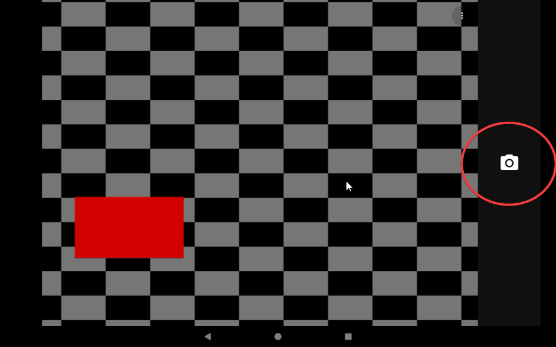
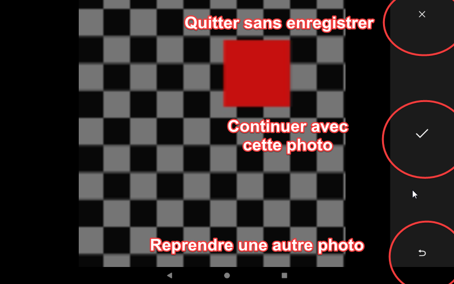
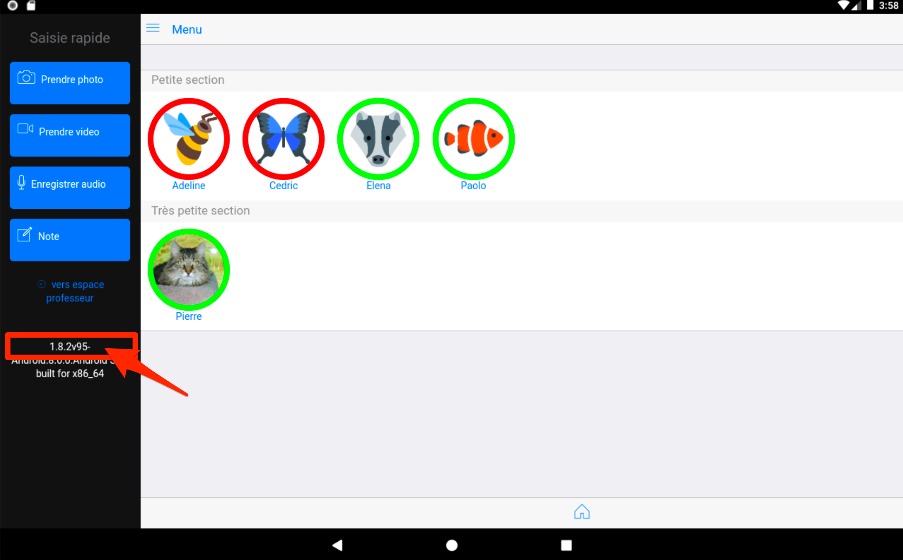

Parcours éleve¶
Ecran d'accueil, mode élève¶
Au lancement de l'application, un écran permet de sélectionner la fiche élève depuis laquelle l'enregistrement des preuves :
- photo
- import vidéo
- vidéo (fonction temporairement désactivée)
- commentaire écrit
- commentaire audio (fonction temporairement désactivée)
4 icones de capture ont été spécialement agrandies pour être adaptées aux capacités motrices des élèves de maternelle.
L'élève va pouvoir réaliser les actions suivantes :
- Prendre une photo de son travail
- Prendre une vidéo de son travail (fonction temporairement désactivée)
- Enregistrer sa voix (fonction temporairement désactivée)
- Enregistrer une note
- Visualiser ses documents capturés au fil du temps

Version courante (iOS), sans les boutons vidéo et audio, temporairement désactivés.
Vidéo : saisie d'une trace par un élève¶
NB : (fonction temporairement désactivée). Reste possible l'import d'une vidéo prise àpar ailleurs, en dehors de l'application.
Ecran d'accueil, sélection de l'atelier¶
La sélection de l'atelier s'effectue en touchant la ligne d'entête.

Pour sélectionner l'atelier sur lesquels le groupe d'élèves munis de la tablette travaille, touche la zone bleue contenant l'atelier correspondant :

Le numéro de l'atelier et l'observable associé s'affichent maintenant dans la ligne d'entête.
A partir de cet instant, toutes les traces capturées par le groupe d'élève vont être affectées automatique à cet observable rappelé dans l'entête.
Des lors que l'élève a commencé par choisir son avatar avant de caputurer une photo, sa trace est automatiquement renseignée et vous n'aurez plus rien à faire, excepté revoir ou affecter un commentaire.

NB : au retour en mode enseignant, l'atelier courant est désélectionné. Aucun atelier par défaut n'est alors actif. Ceci pour éviter l'affectation automatique d'un observable à toute nouvelle capture de trace réalisée en mode enseignant. Il est néanmoins possible de re-sélectionner un atelier par défaut. Il sera ajouté à tout observable que vous pourriez choisir en complément.
Prendre une photo¶
Une fenêtre de prise de vue s'affiche et l'élève n'a plus qu'à appuyer sur le déclencheur.



Saisie d'un commentaire associé à la photo : 2 possibilités.
Avec le clavier, Avec une reconnaissance vocale :

L'écran suivant s'affiche après avoir Sauvegarder

Le message indique que tout s'est bien déroulé !
Point important :
Lorsqu'aucun élève n'a été préalablement sélectionné, la photo n'est pas associée à aucun élève.
L'association devra être réalisée par le professeur dans un second temps, grâce au mode professeur et au menu Mes documents.
Ce mode de capture permet d'utiliser rapidement la tablette sans aucun choix préalable (mode Saisie rapide).
 -->
-->
Saisir une note¶


Comme précédemment, 2 possibilités :

Un nouveau bouton Ecouter permet à l'élève de déclencher une synthèse vocale.

Selection élève¶

Fiche élève¶

Le bouton retour permet de revenir à la liste des élèves.

Le bouton menupermet de revenir aussi à la liste des élèves.

Basculer en mode professeur.¶
Le passage en mode professeur permet d'accéder à des fonctionnalités complémentaires de gestion et de paramétrage.
Regardez le changement du contenu des menu et l'adaptation de la taille des icônes.

Numéro de version¶
Ce numéro correspond à la référence de la version de l'application e-carnet de maternelle installée sur la tablette. Elle est utile à rappeler dans toute correspondance avec le soutien.
